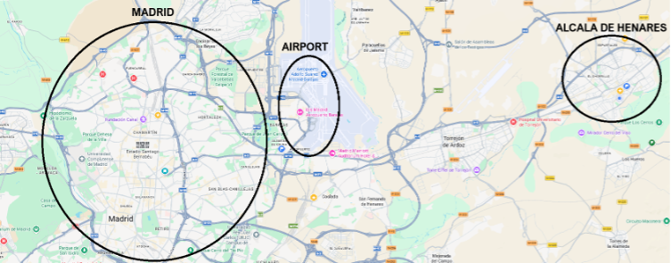

CNSM 2026 will be held in the lively historic city of Alcalá de Henares (Spain), a UNESCO World Heritage Site, specifically on the University of Alcalá campus.
Escuela Politécnica Superior - UAH
Campus Universitario, Ctra. Madrid-Barcelona km, 33, 600
28805 Alcalá de Henares (Spain)
You can find the interactive Map here:
Alcala de Henares is a UNESCO World Heritage city situated approximately 30 minutes from downtown Madrid and just 15 minutes from Adolfo Suárez Madrid–Barajas Airport.

Universidad de Alcalá has several campuses. The most famous Old-Campus is spread around the historical city, being the 15th Rectorate building the most significant and well-known building. We recommend reserving your accommodation in the historical old city for its charming, vibrant atmosphere, easy transportation and accesses.
Nevertheless, the Conference sessions are held in the Escuela Politécnica Superior (EPS) which is located on the external campus of the Universidad de Alcalá, in Alcalá de Henares. Social activities will be celebrated in the historical Old-Campus.
The external EPS campus provides a modern academic and research environment that promotes innovation, international collaboration, and close interaction with industry and technology partners. It also benefits from excellent transport connections, with the historic city center easily accessible in around 10 minutes by bus (bus line 2).
The conference's main program, including the opening ceremony, plenary sessions, and selected keynote presentations, will be hosted in the EPS Auditorium, a fully equipped venue designed for lectures, technical presentations, and multimedia events.
Parallel technical sessions and additional conference activities will take place in the Sala de Grados, an institutional venue regularly used for academic ceremonies, PhD defenses, and high-profile events.
Some of the workshops will be hosted in other rooms: Sala Torres Quevedo, Sala Juan de la Cierva, or Sala Francisco Coello. For detailed room assignments and session locations, please refer to the Technical Program.
To ensure participants' comfort throughout the conference, the EPS also offers on-campus lunch facilities, including a cafeteria and catering services, providing convenient meal options during the event.
Participants of CNSM 2026 are responsible for booking their own accommodation. To assist with your planning, we are pleased to share a few suggestions with special discounted rates. However, you are free to choose any accommodation that best suits your preferences and budget.
Important: Alcalá de Henares is a popular destination for conferences, exhibitions, and cultural events. Therefore, we strongly recommend that you book your accommodations as soon as possible, as availability may run out well in advance.
We have partnered with a few providers to offer discounted rates for CNSM 2026 attendees. For both hotels, the promotional code is as follows: CONGRESO CNSM26
Alcalá de Henares offers a wide variety of accommodation options, including hotels, boutique guesthouses, apartments, and hostels to suit different budgets and preferences.
Please note that the conference venue is located on the northern outskirts of the city. When making your reservation, keep in mind that it is approximately a 20-minute bus ride or about a one-hour walk from the historic city center. We therefore encourage participants to consider the venue's location and available transport connections when selecting their accommodation.
We encourage you to explore accommodation platforms such as Booking.com, Airbnb, or the Alcalá Tourist Office website for additional options.